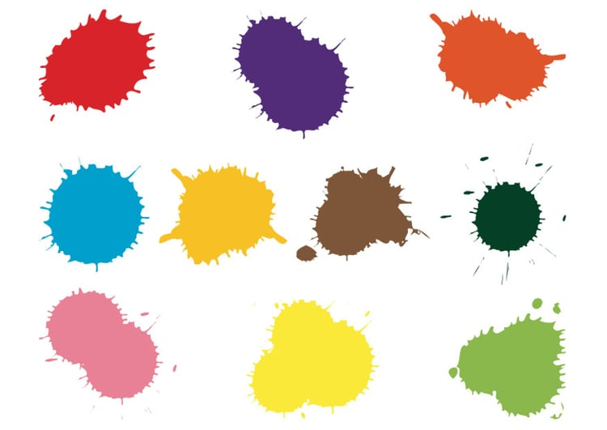

Fargebilder
Lagring og overføring av fargebilder krever mye mer datakapasitet sammenlignet med svart-hvitt-bilder. Et fargebilde består av flere bit per piksel. Dette gjør at lagring og overføring av fargebilder krever langt flere bit enn det svart-hvit ville trengt, og dermed tar mer plass og tid. Når man overfører bildedata til andre, blir hastigheten på overføringen viktig. Dette avhenger av hvor mange biter per sekund som kan sendes, som kalles datahastighet. En raskere datahastighet gir bedre og mer effektiv overføring.
